This local Chromium gallery compares the current branch with the proposed About reflow. The first group is implemented in the review checkpoint; the About alternative is a temporary browser-only style experiment. No About application files were changed.
Open any image in a new tab for its full-resolution capture. The screenshots are review artifacts only; no historical visual references were changed.
Previous hover appearance: white fill, pink outline and inherited 0.7 link opacity. Proposed/current: solid #5C575C, white text, full opacity, and no hover outline. The separate 3px pink :focus-visible outline remains for keyboard users.
Before
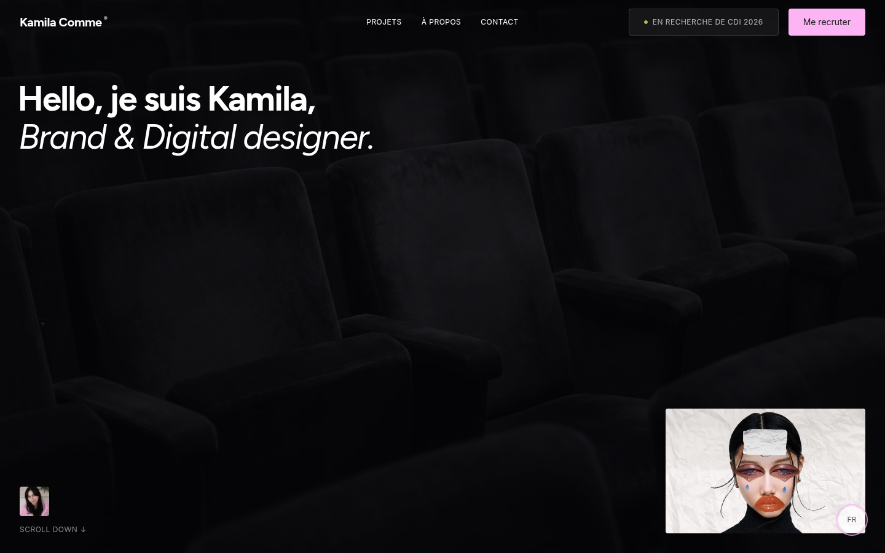
After
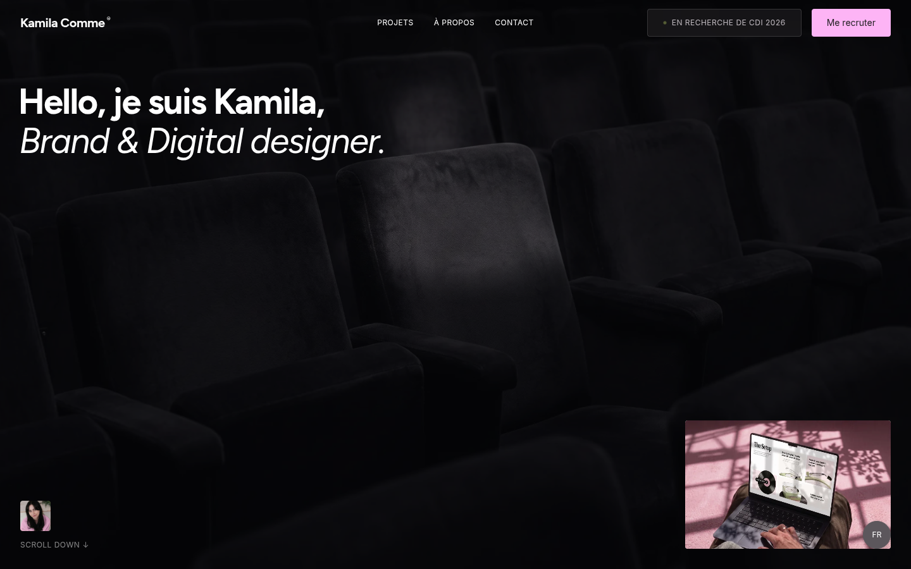
Before
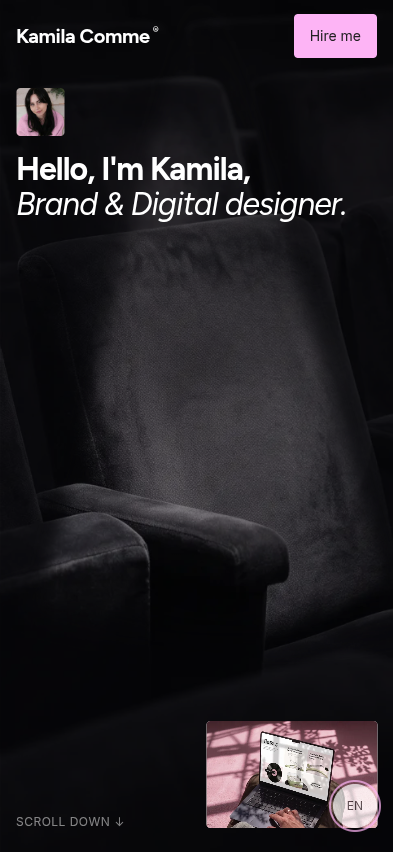
After
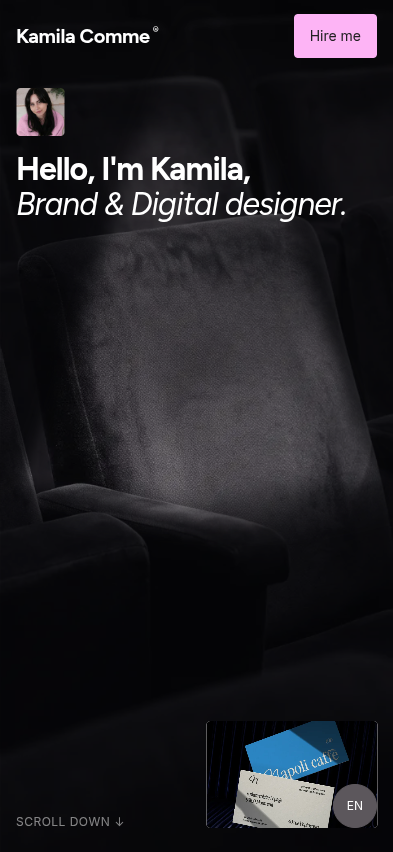
Before images use a temporary browser-only style matching the prior hover rule. The after hover was measured in Chromium: background/border rgb(92, 87, 92), text rgb(255, 255, 255), opacity 1. The switcher remains 44×44px at its existing fixed position.
The Navbar CTA right edge is the viewport width minus the shared 16px mobile gutter. Primary full-width cards now consume the available canvas content width from the canonical project-presentation owner; the three image/barcode aspect ratios remain unchanged. Longread and Napoli retain their intentionally narrower cards; Inside out remains right-aligned. No other section was changed.
| Viewport | Before wide-card right edge | After wide / right-aligned edge | Navbar CTA right edge |
|---|---|---|---|
| 320px | x304; 16px gutter | x304; 16px gutter | x304 |
| 393px | x376.875; 0.125px subpixel difference | x377; 16px gutter | x377 |
| 430px | x376.875; 37.125px short | x414; 16px gutter | x414 |
Images show all six cards in canonical order in French and English. Click a thumbnail for the full-page capture.
Before
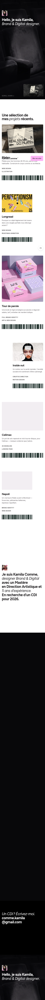
After
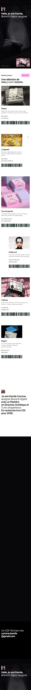
Before
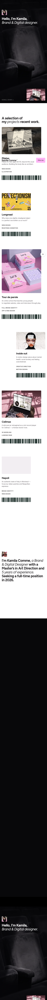
After
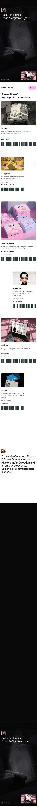
Proposed rule: preserve the approved normal-height composition. When measured text/card geometry cannot fit without card clipping or collision with the introduction, allow the About section to grow in natural document flow. Keep all five existing card nodes and typography; let card widths follow the available content width, their heights follow wrapped text, and place each title and description side-by-side when the viewport height makes a tall card inefficient.
This comparison follows the verified responsive study under About node 408:8513: width stages 408:8514 (326×326) and 408:8518 (196×326) retain 40/14px text while growing with copy; height stages 408:8534 (347×144), 408:8538 (568×90) and 408:8542 (685×88) illustrate compact horizontal title/description alignment. It does not reproduce the 50px stress stages as production targets.
The alternative is CSS injected only into the Chromium review session. It reuses the current About DOM, card order and FR/EN text, and disables the existing motion only to show the final readable geometry. It is not an approved design or an application implementation. The screenshots preserve the 32px title / 14px body sizes and use content-driven card heights. The proposal reserves 56px beyond the shared right gutter for the fixed 44px language switcher plus breathing room, so the control does not cover card copy. At 716×555 the resulting About flow is about 1,060px tall; at 500×600 it grows to about 1,240px in French and 1,300px in English as text wraps.
Current implementation, settled card overlap
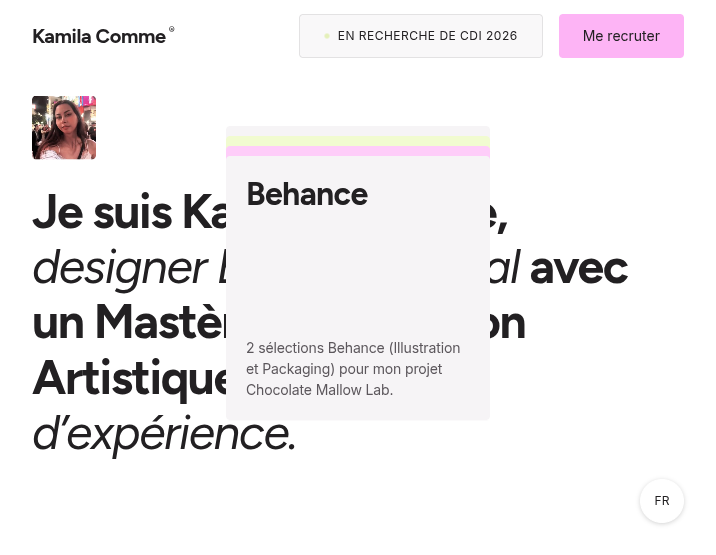
Natural-flow proposal · initial viewport
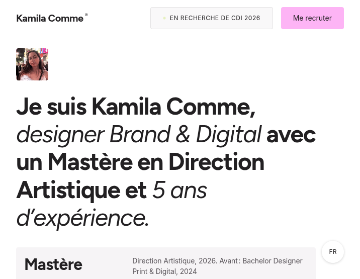
Current
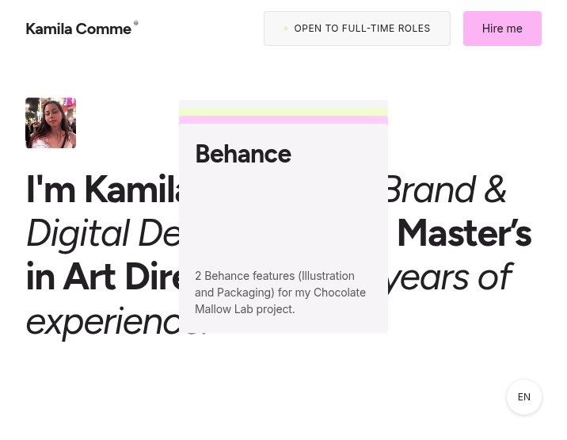
Proposal · initial viewport
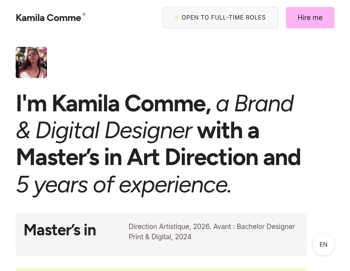
Current
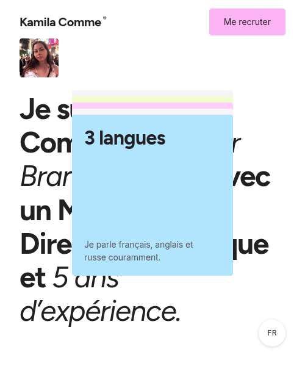
Proposal · initial viewport
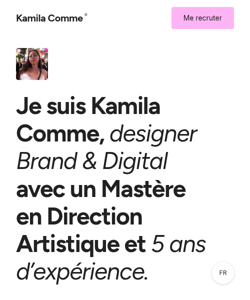
Current
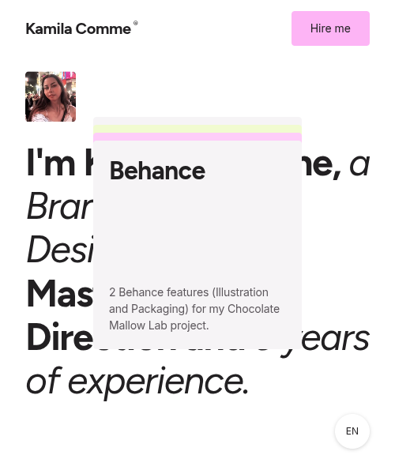
Proposal · initial viewport
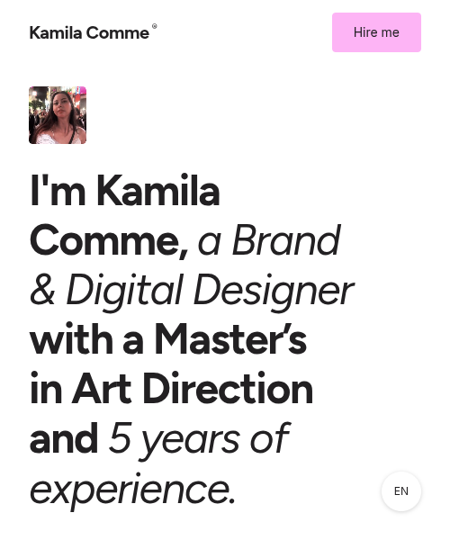
The current composition is shown at two scroll positions, in both languages and sizes, so you can review the overlap during card progression rather than only a single frame.